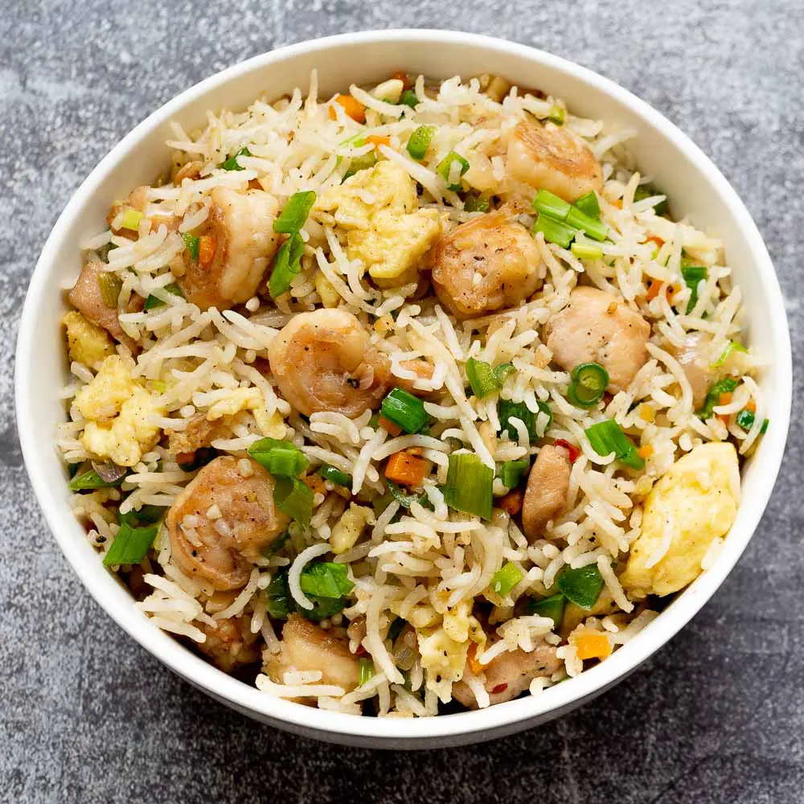

Special Mixed Fried Rice
Home

Ingredients
- 300g lamb, cut into bite-sized pieces
- 150g prawns, peeled and deveined
- 150g squid, cleaned and sliced into rings
- 150g mussels, cleaned and debearded
- 2 cups rice
- 1 large onion, finely chopped
- 2 tomatoes, diced
- 2 bell pepper, diced
- 6 scotch bonnet pepper
- 2 cloves garlic, minced (you can use powder)
- 1 tablespoon ginger, minced (you can use powder)
- Spices (you can use whatever spices you prefer, such as oregano, basil, curry, etc.)
- Salt, to taste
- Olive oil or another cooking oil
- Fresh herbs for garnish (optional, such as parsley or cilantro) - you can also use the bottled one if you prefer
- Water for cooking rice
Instructions
Prepare the Rice
- Rinse the rice until the water runs clear to remove excess starch. This helps the rice not to stick.
- In a large pot, bring water to a boil. Add a pinch of salt, some onion and the rice. Cook according to package instructions until just tender. Drain any excess water and set aside.
Prepare the Protein
- Heat oil in a large skillet or wok over medium-high heat.
- Add the lamb pieces and sauté until they start to brown.
- Add prawns, squid, and mussels. Cook until the prawns are pink and the mussels have opened (discard any that do not open).
- Remove the seafood and lamb from the skillet and set aside.
Saute the Vegetables
- In the same skillet, add more oil if needed. Sauté onions, bell peppers, tomatoes, garlic, and ginger until the onions are translucent and the tomatoes break down into a sauce.
- Stir in your selected spices and cook for an additional minute to release their flavors.
Combine and Finish Cooking:
- Return the cooked lamb and seafood to the skillet with the vegetables.
- Add the cooked rice, gently folding it in to mix thoroughly with the vegetable and protein mixture.
- Reduce heat to low. Cover and let simmer for 5-10 minutes to allow the flavors to meld and the sauce to be absorbed by the rice.
More details
- Serves: 1 to 5
- Course: Main meal